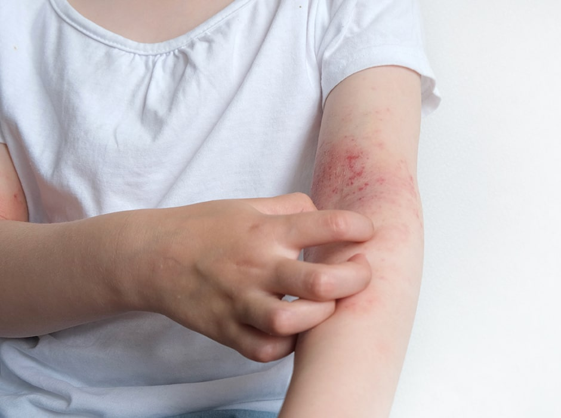
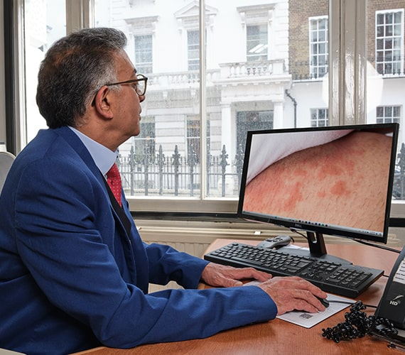
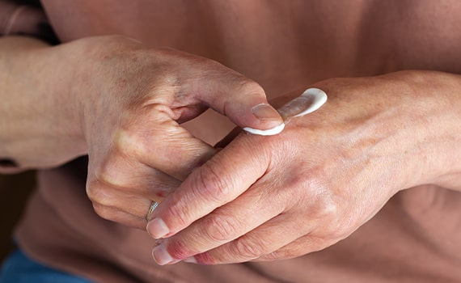

Struggling with Eczema?
Should you have any enquiries or need to arrange a consultation, please complete the contact form, and we will respond promptly. Our experienced dermatologists are dedicated to providing optimal, personalised eczema care.

Eczema is a form of dermatitis, or inflammation of the upper layers of the skin. The term eczema is broadly applied to a range of persistent or recurring skin rashes characterised by redness, itching, and dryness, with possible scaling in more advanced stages. It is not a contagious skin condition and cannot be spread from one person to another. It can be hard to resist scratching the skin, but doing so can open the skin and lead to infection and bleeding.
There are several types of eczema. Atopic dermatitis is the most common type and often begins in childhood. One in five children in the UK is affected by atopic dermatitis. It is most common in children but can affect people of all ages. While many children outgrow eczema, they may have a tendency to dry, sensitive skin in adulthood. It is also possible for eczema to recur during adulthood, so it is important to maintain a treatment regimen designed to prevent the skin from becoming too dry. Other types of eczema include allergic contact dermatitis and irritant contact dermatitis.
At our leading private eczema clinic in London, our dermatologists specialise in diagnosing and treating all types of eczema. They can help create a personalised treatment plan to manage symptoms and improve skin health, ensuring you receive the best care possible.

Recognizing the correct type of eczema is a crucial part of producing an effective treatment plan. At The London Dermatology Centre we are able to offer Patch Testing on site as well as other allergy testing. Eczema can be acute, sub-acute or chronic and a variety of treatments exist that can help to effectively manage the condition.
Eczema treatment can be complex and comprises of a maintenance skin care programme to reduce the incidence of flares as well as treatment for the acute episodes.

There are a number of types of eczema. Atopic dermatitis is the most common type of eczema and often begins in childhood. One in five children in the UK is affected by atopic dermatitis. It is most common in children but can affect people of all ages. Whilst many children grow out of eczema they may have a tendency to dry, sensitive skin in adulthood. It is also possible for the eczema to recur during adulthood and so it is important to maintain a treatment regimen designed to prevent the skin becoming too dry. Other types of eczema include allergic contact dermatitis and irritant contact dermatitis.

At our eczema clinic in London, we have experienced dermatologists who specialise in the condition. The key to reducing or eliminating your eczema lies in understanding its type, as well as identifying any irritants or causes. Your consultant will use their extensive knowledge to make an exact diagnosis. We also provide professional patch testing to identify potential allergies. We can prescribe a range of treatments, including medication and specialist topical creams, tailored to your specific type of eczema. Additionally, we can suggest lifestyle changes to aid your symptoms and recovery.
Eczema is common, but symptom severity varies between patients. It's genetically caused, and while there’s no cure, appropriate treatment can significantly alleviate symptoms.
Eczema often affects children, many of whom outgrow it, but it can also be triggered by allergic reactions to environmental factors like certain foods or materials.
In assessing your eczema, we’ll identify potential allergens causing flare-ups. During your consultation, your dermatologist will examine your symptom patterns. Keeping a diary of symptom changes for a week before your appointment can help pinpoint triggers.

Topical calcineurin inhibitors (TCIs) are another type of topical treatment for eczema that works to calm the inflammation in the top layers of skin. TCIs are safe steroid-alternative treatments for eczema flare ups. There are two types: Elidel (pimecrolimus) and Protopic (tacrolimus). These creams do not contain steroids and so do not cause the same side effects as steroids. The most common side effect of the TCIs is a warming or burning sensation at the site where the cream is applied.

This sensation is not usually a reason to stop using the cream as it typically subsides within a week. These treatments are licensed in the UK for the treatment of eczema in adults and children over the age of two.
Other alternative treatments that are used less frequently for the management of eczema are phototherapy, bandages and immunosuppressants.

During periods of active eczema the skin can become very red, itchy, sore, blistered and weepy. This is called a flare up and requires additional treatment on top of emollients to help calm the skin. Without the additional treatment these areas of skin may thicken and become even more itchy. The most common treatment for eczema flare ups are topical steroids. Topical steroids reduce the inflammation in the top layers of skin.
Topical steroids come in several different forms and strengths. They are available as creams, ointments, lotions, scalp applications and in plasters and tapes. There are four different strengths of topical steroid available: mild, moderate, potent and very potent. Depending on your age, the severity of the eczema flare up, where it occurs on your body and any other treatments you use, the doctor will decide which strength of topical steroid you need.
In general, mild strength topical steroids are used for the face, genital areas and for babies. The length of time you need to use the topical steroid for also depends on the severity of the flare up and of the strength of the topical steroid you are prescribed.
Topical steroids are used for short periods of time to treat flare ups. Patients should continue to use their emollient for washing and moisturising during the use of the topical steroid. It is important to use emollients all the time to prevent the skin becoming dry and itchy. Your doctor may prescribe you a topical steroid to keep at home in case of a flare up. If you have more severe eczema with frequent flare ups, your doctor may prescribe you topical steroids to apply 2 days a week to the areas where the eczema usually flares up. This is known as ‘weekend therapy’ and is a type of preventative strategy for those people with severe eczema. It can help prevent the almost continuous flare cycle, meaning that in the long run less topical steroid is used than if each flare were treated as it occurs.

Topical steroids are safe and effective when used appropriately and under the supervision of an experienced dermatologist. These preparations have been in existence for over 50 years and so the safety profile and side effects are well known. The chance of side effects occurring is related to the potency of the topical steroid used, the condition of the skin and the age of the patient. If topical steroids are used incorrectly or for long periods of time, it can lead to thinning of the skin, telangiectasia (where small blood vessels widen and become more prominent) and striae (stretch marks). Other potential side effects include perioral dermatitis (spotty rash around the mouth) and increased hair growth.

A crucial aspect of managing eczema involves keeping the skin soft and supple through the regular and generous application of emollients. These moisturisers provide a barrier that prevents water loss and adds moisture, helping avoid skin dryness which can lead to itchiness and roughness.
Emollients come in forms like creams, ointments, and lotions. Creams, a blend of fat and water, are popular for their light, cooling effect but may contain preservatives that occasionally cause sensitivities.

Ointments, free from preservatives, are greasier and not suitable for weeping eczema, while lotions, lighter due to more water and less fat, work well for hairy areas but are less moisturizing.
For eczema patients, it's recommended to use emollients for both washing and moisturizing, even when symptoms are absent. These soap substitutes clean effectively without foaming and help soothe itchy, inflamed skin. At The London Dermatology Centre, we offer a selection of trusted emollients.
Eczema is a long-term skin condition that causes redness, dryness, itching, and irritation. It is usually diagnosed during a consultation based on your medical history and a visual examination of the affected skin.
We offer a wide range of treatment options tailored to your specific needs, including creams, ointments, oral medications, and light therapy. Your dermatologist will develop a personalised plan based on the severity of your symptoms and your lifestyle.
All consultations are led by experienced dermatologists who specialise in treating complex skin conditions. We focus on personalised care and have access to advanced treatments not always available in standard NHS clinics.
Yes, we offer patch testing and allergy assessments where relevant to help identify possible eczema triggers. These investigations are recommended based on your symptoms and medical history.
There is no permanent cure for eczema, but symptoms can usually be managed very effectively. With the right care, many people enjoy long periods without flare-ups.
The number of visits depends on how your eczema responds to treatment. Some patients need only a few appointments, while others benefit from ongoing follow-up.
Yes, our clinic treats both adults and children with eczema. We take special care to provide gentle and effective treatment plans suitable for younger patients.
It’s helpful to bring a list of any products you use on your skin, as well as any previous treatments you've tried. Photos of flare-ups can also be useful if your eczema is not currently active.
Our eczema clinic is positioned at 69 Wimpole Street, nestled within the Harley Medical District of Marylebone, central London, ensuring superb access for visitors.
Well-connected by various transport links and surrounded by multiple amenities, our location makes visits to The London Dermatology Centre both easy and convenient.
From Bond Street Station, it's just a seven-minute walk to our clinic. Oxford Circus and Baker Street Stations are also nearby, about a ten-minute walk. For those driving, ample street parking is available.
Monday - Friday: 9.00 AM - 5.30 PM
Saturday & Sunday: Closed
69 Wimpole Street,
London W1G 8AS.
Should you have any enquiries or need to arrange a consultation, please complete the contact form, and we will respond promptly. Our experienced dermatologists are dedicated to providing optimal, personalised eczema care.